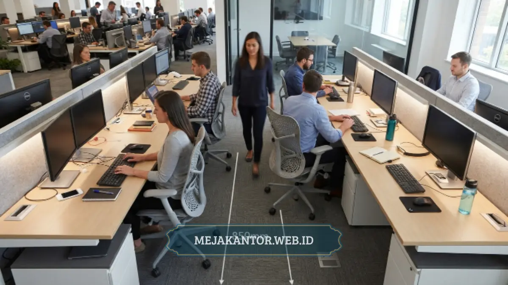

Cara menata meja staff di kantor sempit yang tepat adalah dengan mengatur orientasi meja mengikuti bentuk ruangan, memaksimalkan partisi vertikal, dan menjaga jalur sirkulasi tetap terbuka agar tim tidak merasa sesak.
- Prioritaskan alur sirkulasi sebelum menentukan jumlah meja yang muat.
- Gunakan partisi workstation untuk membagi ruang tanpa menyekat udara dan cahaya.
- Pilih orientasi meja berbaris atau cluster sesuai bentuk ruangan, bukan sekadar mengikuti tren.
- Manfaatkan penyimpanan vertikal agar permukaan meja tetap bersih dan lega.
- Evaluasi ulang layout setiap kali jumlah staff bertambah agar kepadatan ruang tetap terkendali.
Menata meja staff di kantor yang tidak luas sering kali menjadi tantangan tersendiri bagi pemilik usaha kecil dan menengah. Ruang yang terbatas memaksa perusahaan untuk berpikir lebih cermat dalam menentukan posisi meja, jalur lalu lalang karyawan, hingga penempatan lemari arsip.
Jika penataan dilakukan asal-asalan, kantor sempit akan terasa semakin sesak, suasana kerja menjadi tidak nyaman, dan pada akhirnya berdampak pada konsentrasi maupun produktivitas tim. Sebaliknya, dengan strategi layout yang tepat, ruang kantor yang terbatas tetap bisa terasa lega, rapi, dan mendukung alur kerja yang efisien.
Daftar Isi Artikel
- Mengapa Penataan Meja Staff Sangat Berpengaruh pada Produktivitas?
- Bagaimana Prinsip Dasar Menata Meja Staff di Ruang Kantor Sempit?
- Model Layout Apa yang Paling Efisien untuk Kantor Kecil?
- Berapa Jarak Ideal Antar Meja Staff di Ruang Terbatas?
- Bagaimana Cara Memaksimalkan Partisi Workstation di Ruang Sempit?
- Apa Saja Kesalahan Umum yang Membuat Kantor Sempit Terasa Sesak?
- Tips Praktis Menata Meja Staff agar Kantor Sempit Terasa Lebih Lega
Mengapa Penataan Meja Staff Sangat Berpengaruh pada Produktivitas?
Penataan meja staff memengaruhi produktivitas karena posisi kerja yang nyaman dan bebas hambatan visual maupun fisik membantu karyawan lebih fokus menyelesaikan tugas tanpa gangguan lalu lintas orang di sekitarnya.
Ruang kerja yang sempit namun tertata dengan baik cenderung menghasilkan suasana yang lebih tenang dibandingkan ruang luas yang berantakan. Ketika meja staff ditempatkan tanpa perhitungan yang matang, karyawan sering kali harus berbagi jalur akses yang sama untuk lalu lalang, sehingga konsentrasi mudah terganggu oleh suara langkah kaki, obrolan, atau gesekan kursi.
Selain itu, penataan yang buruk juga membuat pencahayaan alami tidak merata, sehingga sebagian staff bekerja di area yang terlalu terang sementara yang lain berada di sudut minim cahaya. Aspek psikologis juga berperan penting. Ruang kerja yang terasa sesak dapat meningkatkan tingkat stres visual, terutama jika staff duduk saling berhadapan dalam jarak sangat dekat tanpa pembatas apa pun. Secara umum, penataan yang memperhatikan jarak personal minimal antar staff membantu menjaga kenyamanan psikologis selama jam kerja, meskipun luas ruangan terbatas.
Bagaimana Prinsip Dasar Menata Meja Staff di Ruang Kantor Sempit?
Prinsip dasarnya adalah mendahulukan alur sirkulasi manusia, memanfaatkan sudut ruangan secara maksimal, dan menghindari penempatan furnitur besar di jalur utama akses keluar-masuk ruangan.
Sebelum menentukan berapa banyak meja yang bisa dimasukkan ke dalam ruangan, langkah pertama yang perlu dilakukan adalah memetakan jalur sirkulasi utama. Jalur ini mencakup akses menuju pintu masuk, area meeting, toilet, hingga pantry. Jalur tersebut sebaiknya tidak terpotong oleh meja atau lemari, karena akan menciptakan kemacetan kecil setiap kali staff berpindah tempat.
Setelah jalur sirkulasi ditentukan, barulah sisa ruang dialokasikan untuk meja kerja. Pendekatan ini berbeda dengan kebiasaan umum yang langsung memasukkan meja sebanyak mungkin tanpa mempertimbangkan ruang gerak. Prinsip kedua adalah memanfaatkan sudut ruangan yang sering terabaikan. Sudut ruangan dapat digunakan untuk meja individu atau titik penyimpanan kecil, sehingga area tengah ruangan tetap lapang untuk pergerakan.
Prinsip ketiga adalah konsistensi tinggi furnitur. Menggunakan meja dan partisi dengan tinggi yang seragam membantu ruangan terlihat lebih rapi secara visual, meskipun ukurannya terbatas. Ruangan dengan ketinggian furnitur yang tidak seragam cenderung terasa lebih sempit karena garis pandang menjadi terputus-putus.
Model Layout Apa yang Paling Efisien untuk Kantor Kecil?
Layout berbaris (row layout) dan layout cluster kecil beranggotakan tiga hingga empat meja umumnya menjadi pilihan paling efisien untuk kantor berukuran kecil karena keduanya menghemat jalur sirkulasi.
1. Layout Berbaris (Row Layout)
Layout ini menempatkan meja secara sejajar menghadap satu arah, mirip susunan kelas. Model ini cocok untuk ruangan memanjang karena memaksimalkan panjang dinding tanpa memotong lebar ruangan secara berlebihan. Kekurangannya, staff yang duduk di baris belakang cenderung memiliki privasi visual lebih rendah karena posisi punggung terlihat oleh staff di belakangnya.
2. Layout Cluster Kecil
Model ini mengelompokkan tiga hingga empat meja dalam satu formasi berhadapan atau menyudut, biasanya dipisahkan oleh partisi workstation setinggi bahu duduk. Layout cluster lebih hemat ruang gerak dibandingkan meja yang disusun terpisah satu per satu, karena jalur akses bisa digunakan bersama oleh beberapa staff sekaligus. Model ini juga memudahkan koordinasi tim yang sering berkolaborasi dalam satu unit kerja.
3. Layout L-Shape Mengikuti Dinding
Untuk ruangan berbentuk tidak beraturan, menata meja mengikuti kontur dinding dalam formasi huruf L dapat memaksimalkan sudut yang biasanya terbuang. Model ini cocok diterapkan pada ruangan sempit dengan banyak sudut mati akibat tiang bangunan atau kolom struktural.
Pemilihan model layout sebaiknya disesuaikan dengan bentuk denah ruangan yang sudah ada, bukan sebaliknya. Memaksakan satu model layout pada bentuk ruangan yang tidak sesuai justru akan menyisakan ruang kosong yang tidak fungsional di beberapa titik.

Berapa Jarak Ideal Antar Meja Staff di Ruang Terbatas?
Secara umum, jarak antar punggung kursi staff sebaiknya cukup untuk satu orang lewat dengan nyaman, sementara jarak antar sisi meja yang berhadapan idealnya memberi ruang gerak siku tanpa saling bersentuhan saat bekerja.
Beberapa referensi tata ruang kerja modern menunjukkan bahwa kantor dengan kepadatan staff yang direncanakan secara matang cenderung melaporkan tingkat kepuasan kerja yang lebih tinggi dibandingkan kantor yang penataannya dilakukan tanpa perencanaan. Jika ruang benar-benar terbatas, prioritaskan jarak sirkulasi utama terlebih dahulu, kemudian sesuaikan ukuran meja individu, bukan sebaliknya.
Bagaimana Cara Memaksimalkan Partisi Workstation di Ruang Sempit?
Partisi workstation dapat memaksimalkan ruang sempit dengan cara membagi area kerja secara visual tanpa menambah jejak ruang fisik yang signifikan, sekaligus meredam suara antar staff.
Partisi berfungsi ganda dalam kantor sempit: memberi batas privasi kerja sekaligus menjadi elemen penataan yang membantu ruangan terlihat lebih terorganisir. Pemilihan tinggi partisi menjadi faktor penting. Partisi rendah, biasanya setinggi bahu saat duduk, cocok untuk kantor yang mengutamakan komunikasi tim namun tetap ingin ada batas visual antar meja. Partisi ini juga membantu cahaya alami tetap menyebar merata ke seluruh ruangan karena tidak menghalangi pandangan sepenuhnya.
Sebaliknya, partisi tinggi cenderung lebih cocok untuk staff yang membutuhkan fokus individu tinggi, seperti tim finance atau customer service yang menangani panggilan telepon. Namun partisi tinggi berisiko membuat ruangan sempit terasa lebih sesak karena memotong garis pandang secara total.
Beberapa model partisi modular saat ini dirancang dengan sistem knock-down yang memungkinkan konfigurasi diubah sewaktu-waktu mengikuti kebutuhan jumlah staff. Fleksibilitas ini penting untuk kantor kecil yang jumlah karyawannya berpotensi bertambah dalam waktu dekat, sehingga investasi furnitur tidak perlu diulang dari awal setiap kali terjadi penambahan staff.
Apa Saja Kesalahan Umum yang Membuat Kantor Sempit Terasa Sesak?
Kesalahan paling umum adalah memaksakan jumlah meja melebihi kapasitas ruang gerak, menempatkan lemari besar di jalur sirkulasi utama, dan mengabaikan pencahayaan saat menentukan arah hadap meja.
- Memaksakan Jumlah Meja Berlebihan: Banyak pemilik usaha berusaha memasukkan sebanyak mungkin meja demi menghemat biaya sewa ruang tambahan. Padahal, kepadatan yang berlebihan justru menurunkan efisiensi kerja karena staff kesulitan bergerak, dan risiko kecelakaan kerja ringan seperti tersandung kabel atau kursi meningkat.
- Menempatkan Furnitur Besar di Jalur Utama: Lemari arsip, rak dokumen, atau mesin fotokopi yang ditempatkan di tengah jalur akses utama sering kali menjadi penyebab kemacetan kecil dalam ruangan. Sebaiknya furnitur besar ditempatkan menempel dinding atau di sudut ruangan yang tidak dilalui secara rutin.
- Mengabaikan Arah Cahaya Alami: Menata meja tanpa mempertimbangkan posisi jendela dapat membuat sebagian staff bekerja menghadap silau langsung, sementara sebagian lain berada di area gelap. Idealnya, arah hadap meja diatur tegak lurus terhadap sumber cahaya utama, bukan berhadapan langsung dengan jendela.
- Tidak Menyisakan Ruang untuk Pertumbuhan Tim: Layout yang dirancang pas-pasan untuk jumlah staff saat ini sering kali harus dirombak total ketika ada penambahan karyawan baru. Menyisakan sedikit ruang cadangan sejak awal dapat menghemat biaya renovasi ulang di kemudian hari.
Tips Praktis Menata Meja Staff agar Kantor Sempit Terasa Lebih Lega
Beberapa tips praktis meliputi penggunaan warna terang pada furnitur, pemilihan meja dengan kaki ramping, dan pemanfaatan cermin atau elemen reflektif untuk memberi kesan ruang lebih luas secara visual.
Warna furnitur berperan besar dalam persepsi luas ruangan. Meja dan partisi berwarna terang seperti putih, abu-abu muda, atau kayu natural cenderung membuat ruangan terasa lebih lapang dibandingkan furnitur berwarna gelap pekat. Selain warna, bentuk kaki meja juga memengaruhi kesan visual. Meja dengan kaki ramping atau berbentuk rangka minimalis memberi ruang pandang lebih terbuka di bagian bawah, berbeda dengan meja berkaki masif yang terlihat lebih memenuhi ruangan.
Penempatan cermin di area tertentu, meskipun bukan solusi utama, dapat membantu memberi ilusi kedalaman ruangan. Selain itu, mengurangi jumlah dekorasi di atas meja kerja turut membantu ruangan terlihat lebih rapi, karena permukaan meja yang bersih memberikan kesan luas secara visual, terlepas dari ukuran ruangan sebenarnya.
Terakhir, evaluasi berkala terhadap layout perlu dilakukan, minimal setiap kali ada perubahan struktur tim atau penambahan peralatan kerja baru. Layout yang efisien untuk sepuluh staff belum tentu efisien lagi ketika jumlah staff bertambah menjadi lima belas orang, sehingga penyesuaian ulang menjadi bagian penting dari manajemen ruang kantor jangka panjang.
Untuk kantor yang menggunakan sistem sekat modular, panduan konfigurasi lebih rinci dapat dilihat pada ulasan partisi workstation konfigurasi enam staff (PWS-06) yang membahas salah satu model partisi kompak untuk ruang terbatas. Bagi perusahaan yang sedang menyusun anggaran pengadaan furnitur pimpinan sekaligus, referensi daftar harga meja direktur minimalis terbaru 2026 dapat membantu proses perencanaan biaya secara menyeluruh. Sementara itu, panduan memilih meja kerja staff hemat ruang dapat menjadi pelengkap sebelum menentukan jenis meja individu yang akan digunakan dalam layout akhir.
Sebagai referensi tambahan, prinsip perencanaan ruang kerja yang efisien juga banyak dibahas dalam panduan ergonomi kantor yang dipublikasikan oleh lembaga keselamatan kerja seperti Occupational Safety and Health Administration (OSHA) yang menekankan pentingnya ruang gerak dan pencahayaan dalam desain tempat kerja.
Menata meja staff di kantor sempit bukan sekadar soal memuat sebanyak mungkin furnitur dalam satu ruangan, melainkan soal menyeimbangkan kebutuhan kerja, sirkulasi manusia, dan kenyamanan visual. Prioritaskan jalur akses utama, pilih model layout yang sesuai bentuk ruangan, manfaatkan partisi secara proporsional, dan hindari kesalahan umum seperti memaksakan kepadatan meja berlebihan. Dengan pendekatan yang terencana, kantor berukuran terbatas tetap dapat mendukung produktivitas tim secara optimal.
Konsultasikan Penataan Meja Staff Kantor Anda
Dapatkan konsultasi gratis dan desain layout 2D/3D partisi workstation yang disesuaikan khusus dengan ukuran ruangan kantor Anda.
Konsultasi via WhatsApp 0889-8964-3555
Mega Anggun
Penulis Konten & Spesialis Penataan Interior Kantor. Berpengalaman dalam memberikan tips ergonomi dan memilih furnitur terbaik untuk menunjang produktivitas kerja.